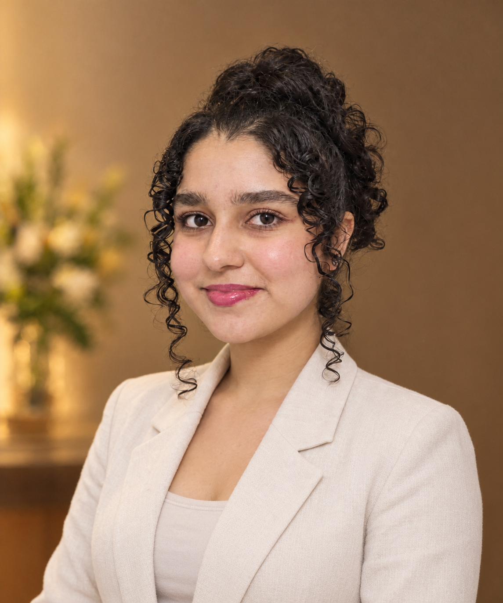

Curiosity
Ask why. Explore possibilities. Keep learning beyond what is required.
THE PERSON BEHIND ANIRAS HUB
An IB graduate of May 2026 who helps other learners flourish.
Starting my IB journey from grade 8 in a new language and over 7000 km away from home, I don't just believe that working smart and hard leads to success; I've proven it with outstanding results and awards in academics, sports, and service.
Achievements such as 55/56 in MYP and 44/45 in the IBDPtaught me that academic success takes problem-solving, curiosity, and the willingness to try again when the first attempt doesn't work.I owe this growth mindset and positive attitude to my athletic journey in gymnastics, taekwondo, and running. Sport teaches me to overcome challenges, learn from failures, and continually strive for improvement. These skills turn into discipline and resilience that are essential for success. However, individual success with no real-life impact is not meaningful! That’s where service comes in. Following my service projects that resulted in Awards of Excellence and Leadership, I strongly believe in the transformative power of helping others. I have created Aniras Hub to particularly share my experiences with you and help you grow into a better version of yourself.

WHAT I HOPE EVERY STUDENT TAKES AWAY
Ask why. Explore possibilities. Keep learning beyond what is required.
A difficult question isn't a dead end. It's an invitation to try a different approach.
Build the skills to think through challenges and trust your own understanding.
Use what you learn not only to grow yourself, but to contribute to the people around you.
“Everything is POSSIBLE—and what matters more than the outcome is the PROCESS.”
One step at a time, until we celebrate your countless achievements together!
Have a question, an idea, or want to learn together? I'd love to hear from you.
NOT YET IS NOT THE END OF YOUR STORY.
At Aniras Hub, “I'm not there yet” becomes a reason to keep going.
Your next step starts here.